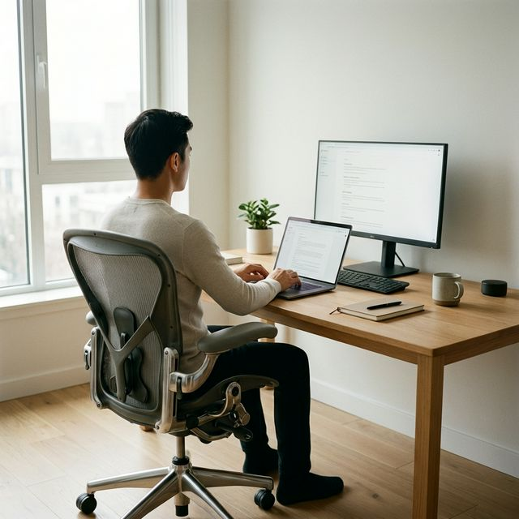
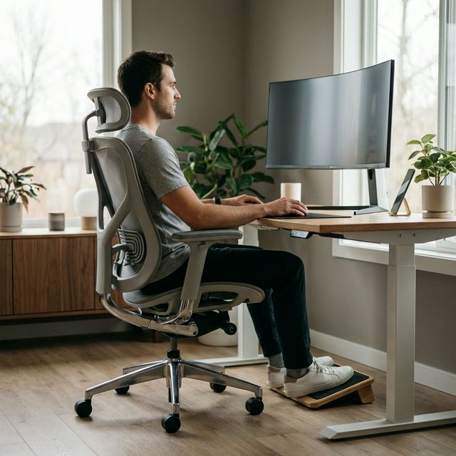
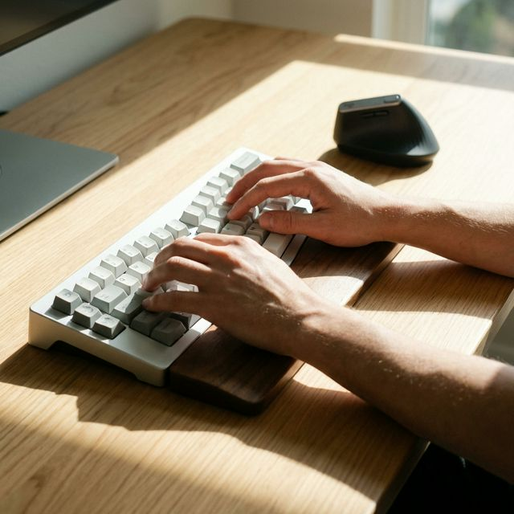
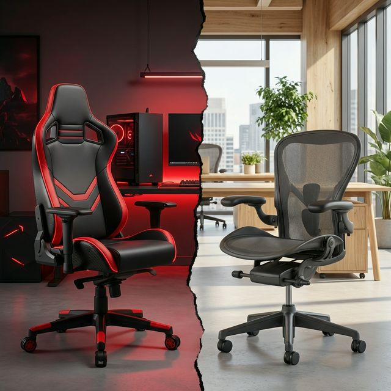
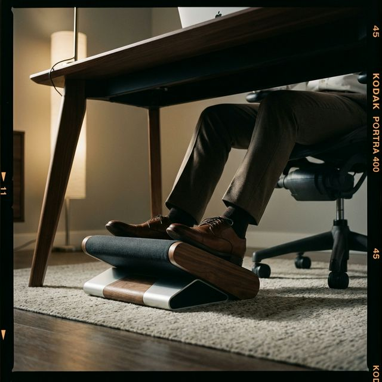
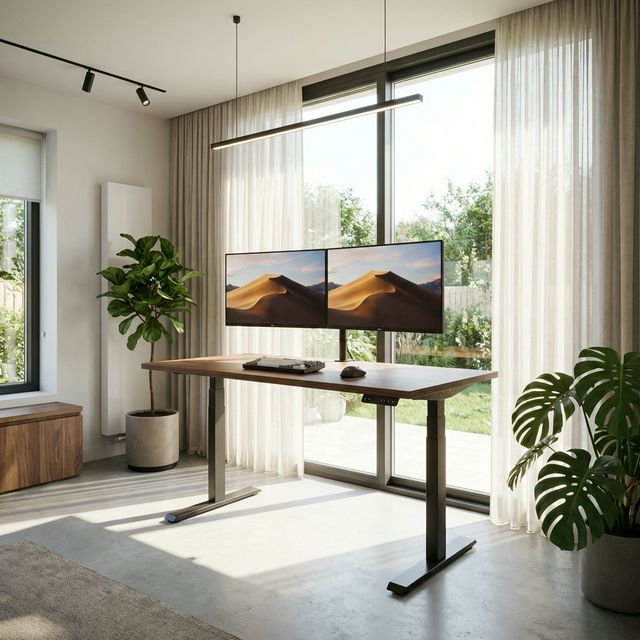
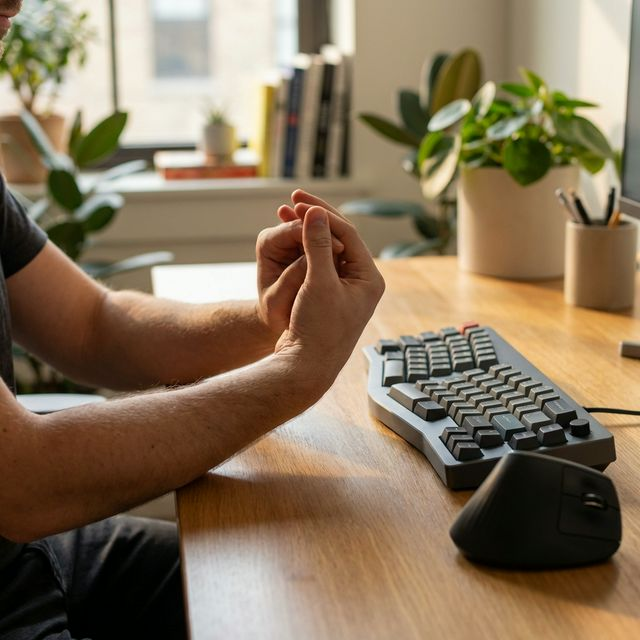
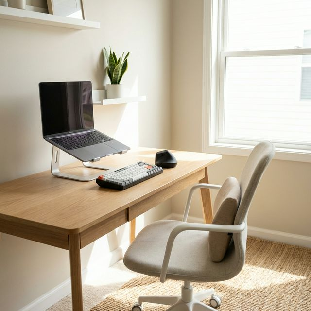

Pourquoi avez-vous mal au dos en télétravail ? Causes et solutions
Découvrez les raisons anatomiques et ergonomiques derrière la douleur lombaire au bureau à domicile.
Conseils basés sur des études médicales, guides pratiques pour améliorer votre posture et analyses approfondies de tout ce dont vous avez besoin pour que le télétravail ne soit pas une douleur.

Découvrez les raisons anatomiques et ergonomiques derrière la douleur lombaire au bureau à domicile.

Liste de contrôle visuelle et pratique pour maintenir une posture neutre et éviter les surcharges musculaires continues.
Lire l'article →Prévention de la fatigue visuelle et des tensions avec des étirements actifs et des pauses pendant la journée de 8 heures.
Lire l'article →
Analyse de l'impact des claviers et souris traditionnels sur le développement des tendinites et du syndrome du canal carpien.
Lire l'article →
Comparaison biomécanique entre le design baquet de l'e-sport et la maille ajustable de la bureautique traditionnelle.
Lire l'article →
Découvrez pourquoi croiser les jambes en s'asseyant est mortel pour votre posture et comment y remédier avec un repose-pieds.
Lire l'article →
Analyse approfondie des matériaux des coussins orthopédiques. Découvrez les différences thermiques et de soutien.
Lire l'article →
Découvrez si les bureaux réglables en hauteur sont la solution ultime au mal de dos ou un simple mythe.
Lire l'article →
Apprenez à identifier les premiers symptômes et découvrez 3 étirements de bureau pour prévenir la chirurgie.
Lire l'article →
Vous n'avez pas besoin d'une chaise à 1000€ pour prendre soin de votre dos. Nous vous montrons les accessoires clés pour télétravailler en toute sécurité.
Lire l'article →